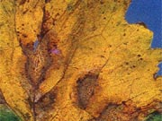

Blackleg is a serious disease of canola caused by the fungus Leptosphaeria maculans. A highly
virulent strain of blackleg was first detected in Saskatchewan in 1975, and has since become widespread throughout the canola growing areas of the province. Blackleg has caused significant yield losses in both the Argentine and Polish cultivars.
Symptoms of Blackleg
Affected canola plants may show infections on cotyledons, leaves, stems and pods.
- Leaf - Leaf spots are dirty white, round to irregularly shaped, and usually dotted with numerous small, round specks. These specks, are black pycnidia (spore-bearing structures).
- Stem - Blackleg lesions can be quite variable, but are usually found at the base of the stem or at points of leaf attachment. Stem lesions may be up to several inches in length, and are usually white or gray with a dark border. Numerous pycnidia form in the center of the lesion. Stem lesions may also appear as a general blackening at the base, again with numerous pycnidia. Severe infection usually results in a dry rot or canker at the base of the stem. The stem becomes girdled the plants ripen prematurely. Seed may be shrivelled and pods containing seed shatter easily at harvest resulting in seed loss.
Spread of Blackleg
The disease is spread a number of different ways; airborne over long distance, short distance or by infected seed.
- Long Distance Airborne Spread - The fungus survives on residue from infected crops, forming sexual spore-bearing structures the following season. When ascospores are released, they become airborne and can travel great distances. Ascospore
release can begin as early as May, causing leaf lesions from the seedling stage onward. Ascospore production can continue for two or three years or more until the stubble breaks down. All the while, blackleg can infect susceptible plants from the airborne spores.
- Short Distance Spread - New infections produce pycnidia which ooze masses of tiny, infectious summer spores, or conidiospores. These spores are spread short distances by rain splash and cause secondary infection within a crop.
- Seed-Borne Infection - The spread of the disease from infected seed can be reduced by treating the seed. This helps to keep the disease from areas where it is not established.
Blackleg Disease Cycle
- Spore form leaf spores spread infection short distances by rain splash.
- Stem canker weakens tissues.
- Spores from leaf and stem cankers infect pods.
- a. Infected pods result in infected seeds that give rise to infected seedlings. Seed treatment will protect plants from infected seed but will not protect
seedlings from infection by airborne spores.
b. Infected stubble produces airborne spores for several seasons capable of travelling long distances.
The infected stubble can produce airborne spores until it has decomposed (this may take 4 or 5 years) or been buried.
Control Measures
- Identify the Disease - Locate diseased plants and confirm the identity of the disease.
- Rotate Crops - A long crop rotation remains an important control measure for blackleg. Canola should not be seeded on or adjacent to canola stubble or in
fields that had infected plants during the previous 3 years.
- Weed Control - Wild mustard and volunteer canola can maintain the disease from year to year. Good weed control in the non-canola years will help to break the
disease cycle.
- Seed Treatment - A known seed source and fungicide seed treatment is the best defence against the introduction of blackleg. Seed treatment will not protect plants from wind-blown spores.
- Crop Residue - Blackleg-infested canola stubble may be buried by plowing or deep cultivating. This will minimize spore production and hasten decomposition.
- Resistance - Plant breeders are making progress in the development of blackleg resistant varieties, at least with Argentine canola.
There are more than a dozen Argentine varieties with partial resistance.
|